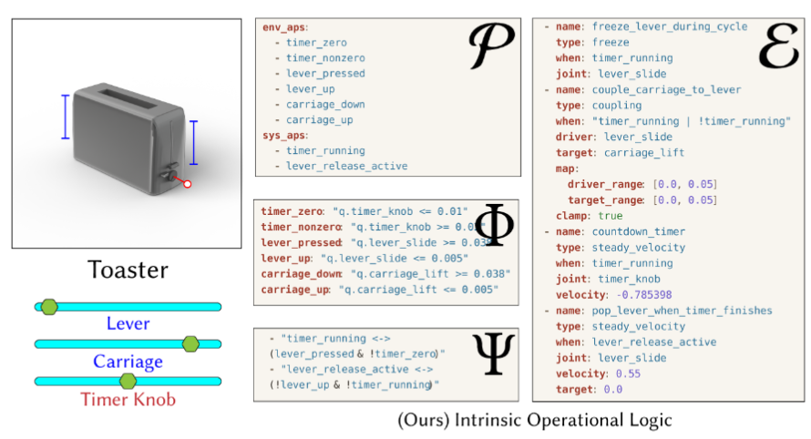

Research · Brown University · Current
Intrinsic Operational Logic
A portable, asset-level representation for articulated objects that encodes local rules such as latches, buttons, pedals, timers, interlocks, and coupled joints.
Implementation notes
The system mediates simulator-proposed joint updates and supports LLM-assisted authoring, controller synthesis, and semantic-trace repair for evaluating embodied interaction tasks.